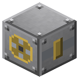

Приводная муфта


Между шкивом и токарным станком IC2 или прокатным станом Railcraft.
Между шкивом и токарным станком IC2 или прокатным станом Railcraft. Вплотную к лицу электрического кинетического генератора IC2 - электропривод вала (мотор = 10 л.с.). Shift + пустая рука — выжать муфту.
Параметры
| Эпоха | 3 — Электричество |
|---|---|
| Многоблок | нет |
| Привод | вал 16 / 4 л.с., даёт вал |
| что делает | отбор вала на токарный IC2 / прокатный RC; у ЭКГ — электропривод вала |
| энергия на входе | вал или kU ЭКГ |
| на выходе | kU / RF / вал |
| из чего | бронзовые шестерни, железный вал IC2, железные листы |
| л.с. (Приводная муфта у ЭКГ IC2) | 10 на мотор ЭКГ |
| л.с. (Муфта у прокатного стана RC) | 16 |
| л.с. (Муфта у токарного IC2) | 4 |
Числа
| RF за 1 л.с. (муфта) | 2 RF |
|---|---|
| kU за 1 л.с. | 10 kU |
| муфта -> токарный IC2 | 4 л.с. |
| муфта -> прокатный стан RC | 16 л.с. |
Кто кормит
- вал ← Паровая машина, Паровая машина высокого давления (трансмиссия)
Кого кормит
- машины Zavod её продукт не едят
Как устроено (из кода)
Приводная муфта: отбор мощности с вала (через шкив) на чужой станок, стоящий вплотную. - Токарный станок IC2: отдаёт кинетическую энергию (kU), станок сам берёт с соседа. Режет он по-прежнему руками, в окне. - Прокатный стан Railcraft: вталкивает RF. Стан берёт 50 RF за тик работы; полный - муфта не тянет вал. Больше никому: генератор IC2 и любые RF-машины рядом с муфтой ничего не получат (вал не превращается в электричество). Электропривод (групповой привод 1890-х): муфта вплотную к ЛИЦУ электрического кинетического генератора IC2 сама крутит вал - Transmission.kuPerHp kU = 1 л.с. Мотор генератора (100 kU/т) - 10 л.с., десять моторов - 100 л.с. Цена EU - в IC2.ini (electric). Берёт kU только на то, что вал реально съел; на линии с паром нагрузку берёт первой. Ветряк, водяное колесо и паровая турбина IC2 вал не крутят - только электричество. Shift + пустая рука - выжать/отпустить муфту; сигнал красного камня - выжата.